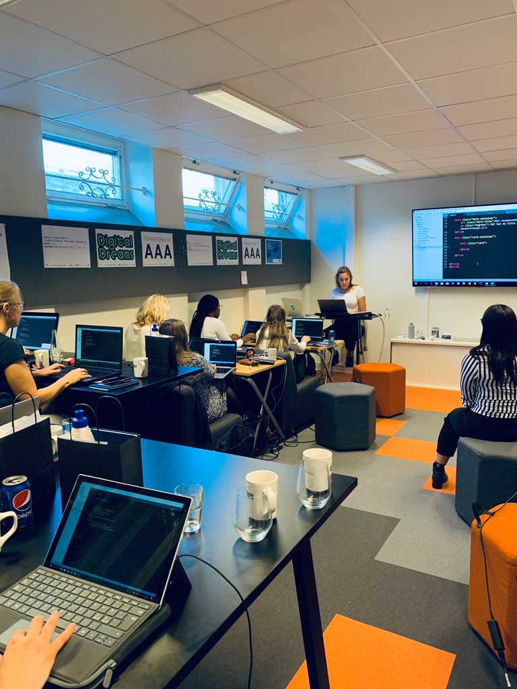

Why is this important?
Women in Tech
How is my everydaylife

As a kid, I dreamed of becoming an artist, and my favorite hour of the week was during art class. I had a hard time during English classes - and math usually felt boring. I was not neither particularly good at memorizing or hitting furthest with a baseball racket. What I mean to say is: I didn't have the highest grade in math, and certainly not in any language. I was successful in subjects that caught my interest and I probably still work this way. You don't need to be a math-pro to become a developer or work in tech - you can both enjoy and be successful anyhow.
Today my hobbies include design (interior and graphic) color palettes and fonts, draw and sketch, challenges that make me irritable, travel and enjoy the sun, new experiences in everyday life and meet interesting and committed people. ALL this exists in my everyday life as a designer and web developer. I constantly have to challenge myself and learn new things. Come up with ideas, re-evaluate, make mistakes and do it all over again.
In the tech industry, I feel that I can be who I am - and my unique perspectives and experiences are highlighted as a strength. How is the world from a women's perspective? What would make my life easier with the help of tech? It is an advantage to have experienced other cultures, communities, and industries. Then you're able to gain empathy and understand the challenges the target group has. What would they need in the service och product we create? I mean, how am I supposed to be able to create a digital service for a blind person if I do not understand how they live, think and feel? It's nearly impossible if you don't listen, ask and try to understand.
But why?
I am passionate about Women In Tech
Well, for the first time I came in contact with programming and the technology was during a two years long web development program.
The other students were so different from me, I didn't feel that I fitted in and all the difficult English words and terms didn't make it any easier. It made me insecure and a little bit scared. I finished the education but didn't dare to continue that journey. But I gave it a second chance at Jönköping University, and started with a positive attitude - "I can do this" spirit. I spent many extra study hours in the beginning to learn the terms and logic - and fell in love with programming. The rush of happiness that comes when solving a problem is hard to beat.

I'm so happy
Now I'm glad I've made the decision to learn how to code and the choice of the tech industry. It can be a struggle sometimes but don't give up. It is challenging for everyone. Programming is a language and everything requires practice - and you will never be fully learned. This allows you to always continue to develop and learn new things, which I think many are looking for in their future professional role.